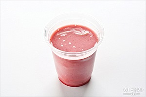

STEP 1
딸기와 바나나는 먹기 좋은 크기로 썰고,Tip. 바나나는 통으로 가져가서 먹기 직전에 포크로 조각내도 좋아요.
봄을 담은 한입 요리
상큼한 도시락 후식

4월의 대표 과일 딸기와 언제나 구하기 쉬운 바나나를
플레인요구르트에 버무려 상큼하게 즐겨요.
필수재료
|딸기(10개) | 바나나(1개) | 플레인요구르트(1개) | 아몬드(적당량)(숫자)는 밥 숟가락 계량 기준 입니다.

STEP 1
딸기와 바나나는 먹기 좋은 크기로 썰고,

STEP 2
컵에 과일과 아몬드,

STEP 3
먹기 직전 과일에 아몬드와